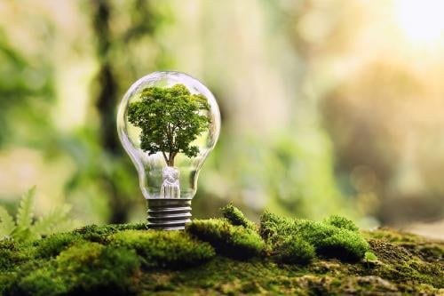
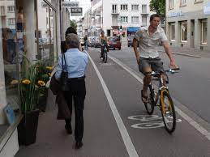
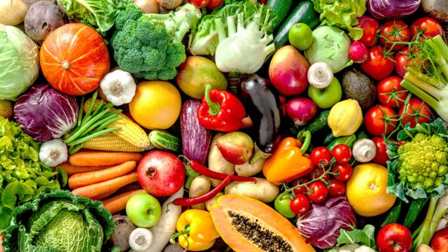
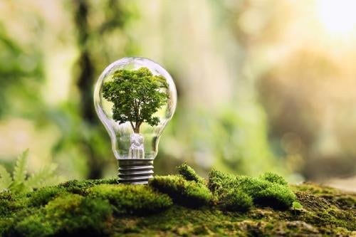
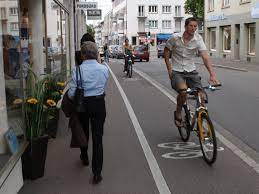
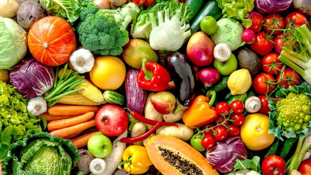

El Cambio Climático, un problema hecho por el hombre

Soluciones ante el cambio climático
Algunas propuestas de solución respecto a la problemática son:
Ahorro de energía:
Gran parte de nuestra electricidad y calefacción funciona con carbón, petróleo y gas. Utiliza menos energía reduciendo la calefacción y el aire acondicionado, cambiando a bombillas LED y electrodomésticos de bajo consumo, lavando la ropa con agua fría o tendiendo la ropa mojada en lugar de utilizar la secadora.

Desplácese caminando, en bicicleta o en transporte público:
Las carreteras del mundo están saturadas de vehículos, la mayoría de los cuales usan diésel o gasolina. Caminar o ir en bicicleta en lugar de conducir reduce las emisiones de gases de efecto invernadero, y supone un beneficio para la salud y la forma física. Para distancias más largas, considera viajar en tren o autobús. Y comparte el coche siempre que sea posible.

Coma más verduras:
Comer más verduras, frutas, cereales integrales, legumbres, frutos secos y semillas, y menos carne y productos lácteos, puede reducir considerablemente tu impacto medioambiental. La producción de alimentos de origen vegetal suele generar menos emisiones de gases de efecto invernadero y requiere menos energía, tierra y agua.

Algunas propuestas de solución respecto a la problemática son:
Gran parte de nuestra electricidad y calefacción funciona con carbón, petróleo y gas. Utiliza menos energía reduciendo la calefacción y el aire acondicionado, cambiando a bombillas LED y electrodomésticos de bajo consumo, lavando la ropa con agua fría o tendiendo la ropa mojada en lugar de utilizar la secadora.

Las carreteras del mundo están saturadas de vehículos, la mayoría de los cuales usan diésel o gasolina. Caminar o ir en bicicleta en lugar de conducir reduce las emisiones de gases de efecto invernadero, y supone un beneficio para la salud y la forma física. Para distancias más largas, considera viajar en tren o autobús. Y comparte el coche siempre que sea posible.

Comer más verduras, frutas, cereales integrales, legumbres, frutos secos y semillas, y menos carne y productos lácteos, puede reducir considerablemente tu impacto medioambiental. La producción de alimentos de origen vegetal suele generar menos emisiones de gases de efecto invernadero y requiere menos energía, tierra y agua.
